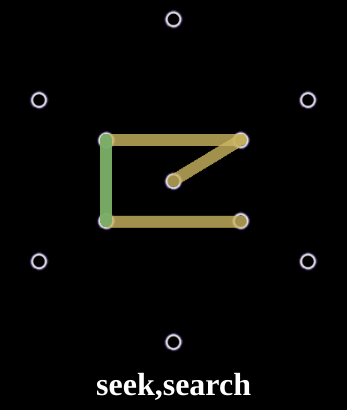
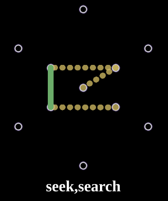

遊び方
[English]
「Glyple」は、「Ingressのグリフ」と「Wordle」をモチーフにしたゲームです。
👀 🎨または✏️の絵文字をタップして、カラーモードを変更します
ルール
6回の試行でグリフを推測します。
存在するグリプでなければなりません。以下が役に立ちます。
https://fevgames.net/ingress/ingress-guide/actions/glyph-hack/
推測するたびに、線の色が変わり、推測がグリフにどれだけ近かったかがわかります。
ブラウザをリロードすると、もう一度プレイできます。
例
|  |
| 🎨 |
|  |
| ✏️' |
垂直線の1つが正しいグリフと一致することを示します。
他の線は、正しいグリフに存在しない線です。
PC (Mac, Windows, ...)でプレイするときのコツ
ブラウザの画面の幅を狭く縦長にするとほどよく収まります😊
[ゲームに戻る]